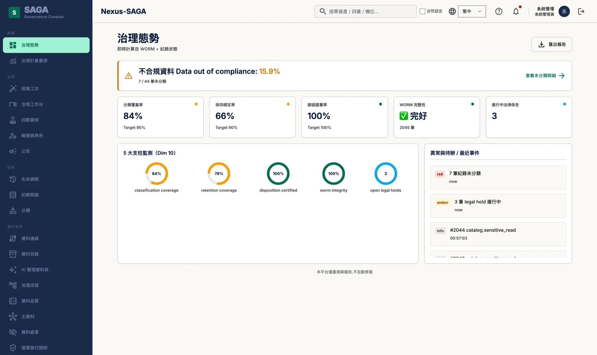
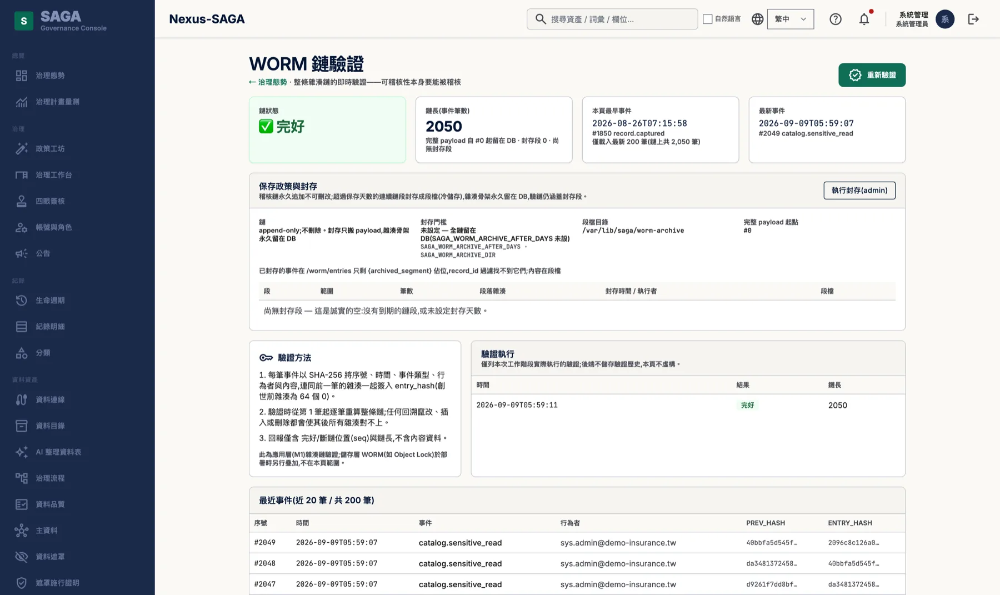
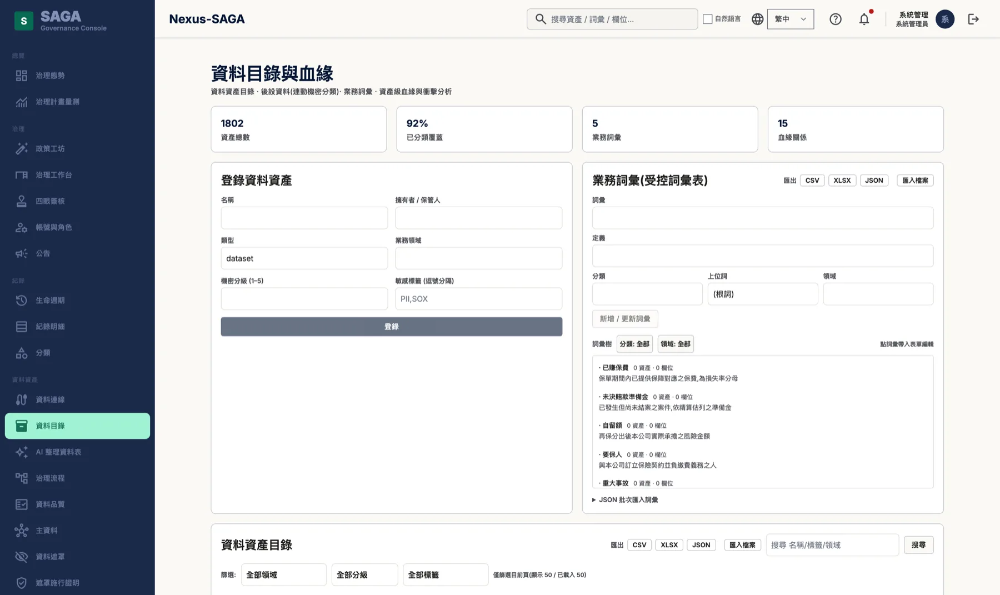
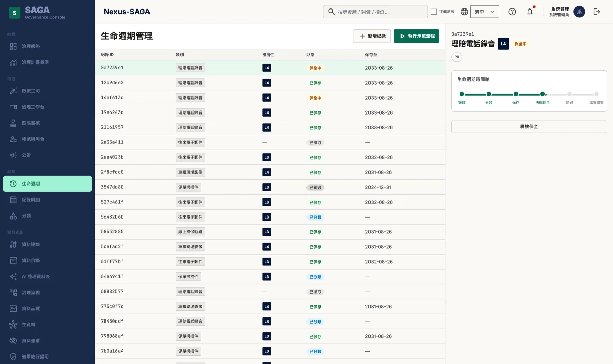
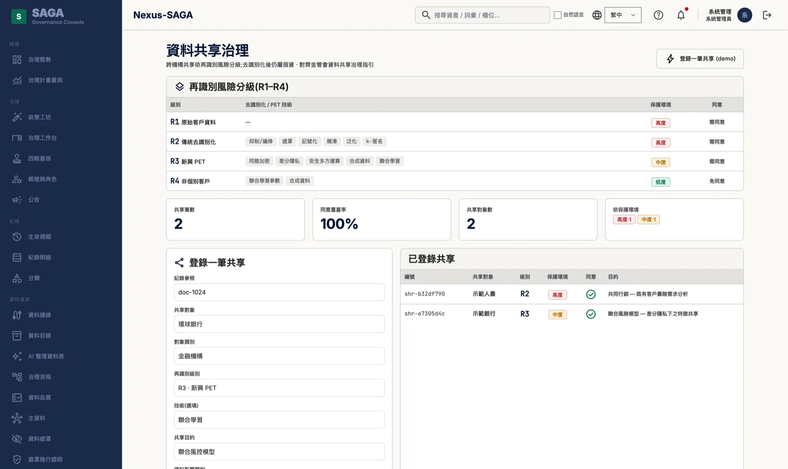
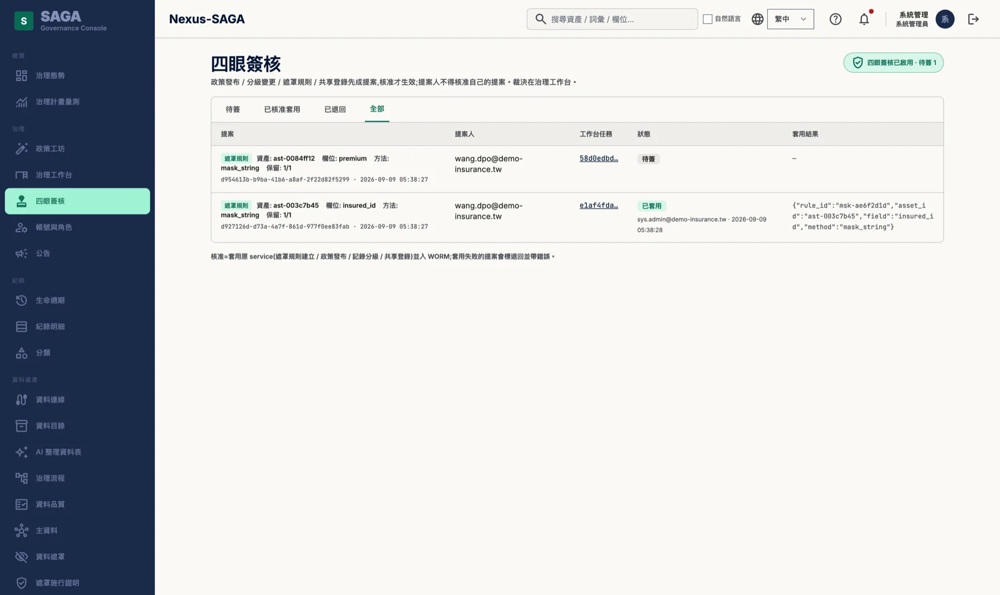
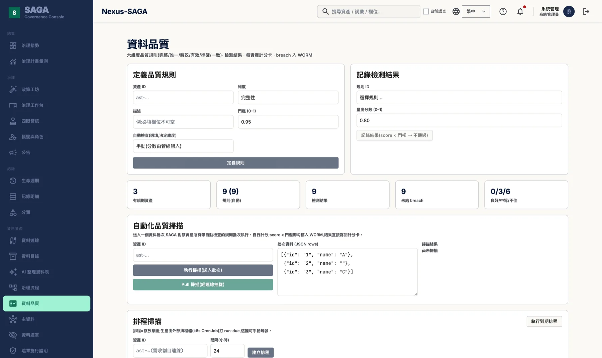
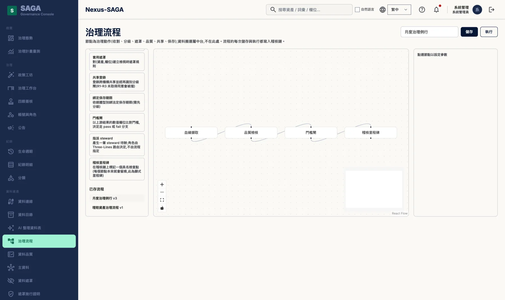
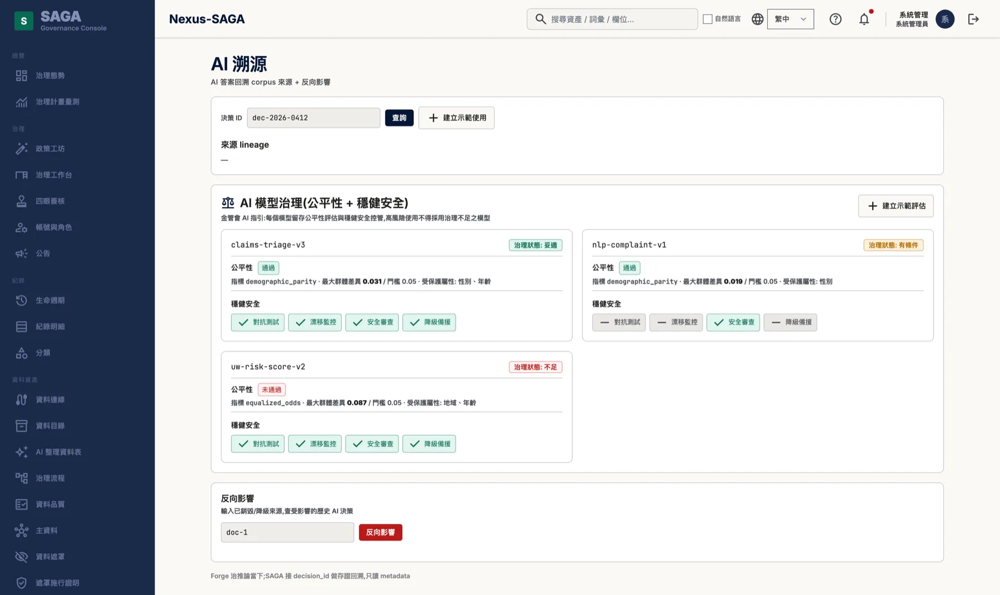
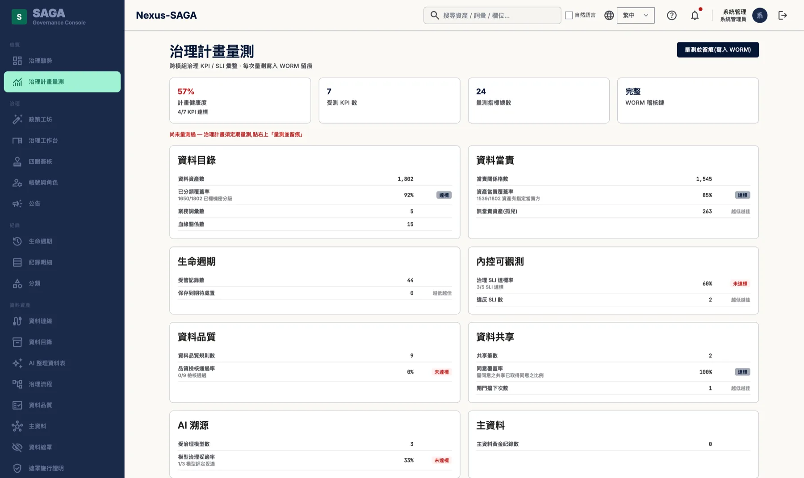

金融機構的非結構化資料治理層。「誰在什麼時候、依哪一條規定、對哪一份資料做了什麼」——這應該是一筆查得到的紀錄，而不是一份說明文件。
治理不是寫一本手冊，是讓每個動作都留得下證據。
資料治理的稽核軌跡，要能在金檢當下拿得出來。

THE PROBLEM
這三件事單獨看都不算問題，但擺在一起，就沒有人回答得出金檢當下會被問的那一句。
分級與保存期限寫在文件裡，但無法回答「這份紀錄現在是第幾級、保存到哪一天、誰核准的」。
稽核表存在一般資料表裡，DBA 改得動。紀錄存在，但沒有辦法證明它從寫入之後沒有被動過。
模型產出了一份建議，但答不出「它引用了哪些資料、那些資料當時是什麼密級、其中有沒有已經該銷毀的」。
CAPABILITIES
以下每一項都有畫面、有 API、有測試。下方「實機畫面」一節可以逐頁對照。
WHAT'S DIFFERENT
資料目錄工具幫你「知道有什麼」；NEXUS SAGA 是在那之上，把該擋的擋在後端——保存期限沒到就是刪不掉，提案人核不了自己的案。以下每一項都寫得出具體是什麼。
保存期限、法律保全、角色權限、四眼，全部在後端擋。把畫面繞過去直接打 API 也擋得住。
append-only 觸發器，不是「應用程式不去改它」。
沒有樣本的指標顯示「無樣本」，不顯示 100%。一套什麼都還沒做的系統，在我們的儀表板上不會是滿分。
權限不足讀不到的資料夾／資料表會被數出來並列名，不會靜默少算。
無金鑰的雜湊可被暴力回推——實測單執行緒約 195 萬組／秒，單一字首開頭的 10 億組空間 6 分鐘就回推完。我們用依租戶加鹽的 HMAC，而且沒有金鑰時拒絕建立規則。
提供離線映像包，現場 load 即可，不需要連外。
PLATFORM SCREENS
2026-09-09 從實際運作的展示站擷取，不是示意圖、不是設計稿。站上是一個虛構的示範租戶（demo-insurance.tw），資料為合成的產險情境，共 1,802 筆資料資產。畫面裡沒有任何真實客戶的名稱或資料。
稽核鏈的筆數在各張圖上不會完全一樣（治理態勢 2,045、稽核鏈 2,050）——因為每一次讀取敏感資料本身就是一筆稽核事件，截圖的動作也會讓鏈變長。這不是誤差，是這條鏈的性質。
點擊任一張圖可開啟原尺寸畫面。





409）。




MEASURED, NOT CLAIMED
以下是實機量測與展示站上打出來的回應，不是規格書上的宣稱。規模測試環境為數十萬張表、PostgreSQL 16、單機容器。
由提案人本人送出核准，伺服器回 409 並說明「提案由該人提出，不得由同一人核准」；換成另一個人核准才成功套用。身分比對會先做正規化——大小寫、全形 ＠、零寬字元都繞不過去。
流程裡的門檻閘被設成看一個上游沒有產生的指標時，它直接讓那一段失敗並寫明「上游沒有產生指標 score」，而不是預設通過。
DEPLOYMENT
含治理底座三個服務與資料庫，一份 compose 檔即可起站。
映像打包成 tar，現場 load，不需連外。
提供 Helm chart。尚未在客戶叢集實跑，這一點寫在下方誠實邊界，不列為賣點。
單機 POC 以 docker compose 起站，接上一套來源系統即可開始收割元數據。資料庫可以用我們帶的，也可以指向貴機構既有的 PostgreSQL。
HONEST BOUNDARIES
產品定位是治理與稽核，所以這一頁不能有一句經不起追問的話。以下是刻意寫出來的邊界，放在這裡，不折疊、不藏在頁尾。
雜湊鏈能證明資料被動過，不能物理阻止有資料庫最高權限的人動它。要做到後者需要儲存層 Object Lock，那是另一個層次的部署選項。
文字擷取與實體辨識不在 NEXUS SAGA 的範圍。SAGA 治理的是分類結果，分類本身需由上游的內容解析提供——這是導入時要一併確認的前提。
治理流程建構器組裝的是既有治理能力，不是通用工作流引擎。
我們對應的是規範要求的做法（分級、保存、當事人權利、利益衝突隔離），合規與否由主管機關與貴機構法遵認定。
目前包含：客戶叢集 Helm 部署、CIFS/NFS 實際掛載、授權到期行為。這些不寫進賣點。
FAQ
不會。非結構化（NAS／檔案系統）盤點只讀檔名、副檔名、大小與修改時間，不開啟檔案內容。文字擷取與實體辨識（NER）不在 SAGA 的範圍——SAGA 治理的是分類結果，分類本身需由上游的內容解析提供。
Oracle、SQL Server、MySQL 的元數據以唯讀方式收割：表、欄位、型別、主鍵、外鍵、註解與檢視表 DDL。Oracle XE 與 SQL Server 2022 已在實機上跑過元數據收割與血緣擷取。映像為 linux/amd64，含 Oracle 與 SQL Server 驅動。
我們的說法是「竄改可被偵測」，不是「不可竄改」。稽核軌跡是雜湊鏈，資料庫層以 append-only 觸發器擋掉 UPDATE 與 DELETE，完整性驗證逐筆重算雜湊、斷鏈時指出斷在第幾筆。但握有資料庫最高權限的人仍動得了資料；要在物理上阻止，需要儲存層 Object Lock，那是部署時另行疊加的選項。
可以。單機／POC 以 docker compose 部署，含治理底座三個服務與資料庫；離線環境可將映像打包成 tar 現場 load，不需連外。資料庫可用我們帶的，也可指向既有的 PostgreSQL。叢集用的 Helm chart 已提供，但尚未在客戶叢集實跑。
我們不宣稱「符合」任何法規。SAGA 對應的是規範要求的做法——分級、保存期限、當事人權利、利益衝突隔離——合規與否由主管機關與貴機構法遵認定。
沒有樣本的指標顯示「無樣本」，不顯示 100%；權限不足讀不到的資料夾或資料表會被數出來並列名，不會靜默少算。上方展示站的治理態勢首頁本身就標著「不合規資料 15.9%」與兩項未達標，治理計畫量測頁的健康度是 57%。